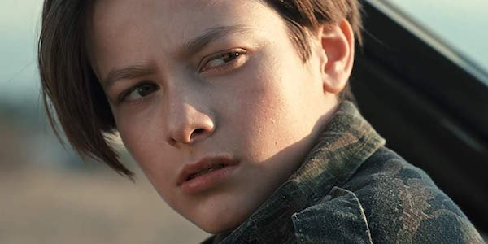
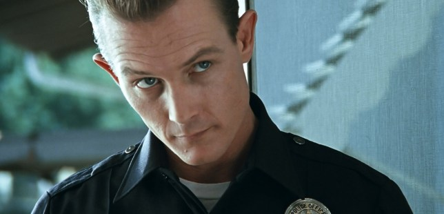
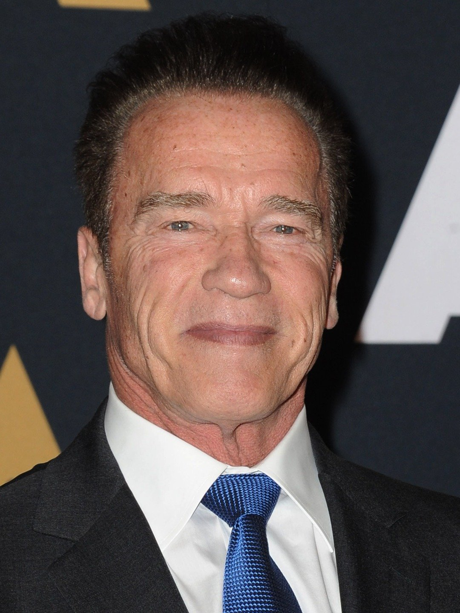

Edward Furlong (John Connor)

Robert Patrick (T-1000)

Linda Hamilton (Sara Connor)

Arnold Schwarzenegger (Terminator)
The movie Terminator 2 takes place 11 years after the first and revolves around the T-800 being sent back in time to save John Connor and the T-1000 being sent back in time to kill him. John Connor is the key to saving humanity from a robot uprising in the future which is why the T-1000 is sent back in time to kill him.
- Budget: 100 million U.S Dollars
- Box Office: 523.7 million U.S Dollars
- Reviews: 95% of viewers liked the movie
- Release Date: July 1,1991
You Could Be Mine (1991), performed by Guns N' Roses
Bad To The Bone (1982), performed by George Thorogood & The Destroyers
Guitars,Cadillacs (1986), performed by Dwight Yoakam
And This One performed by Dwight Yoakam